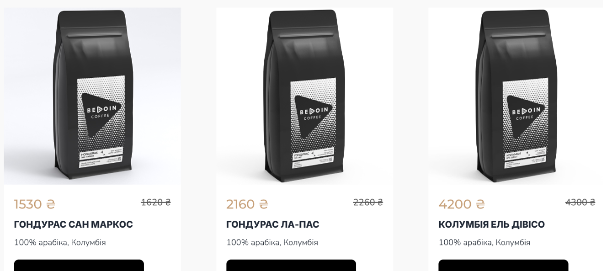
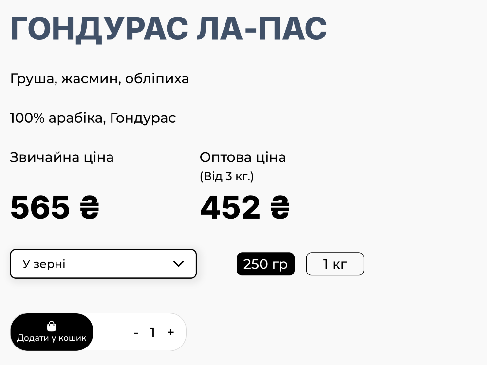
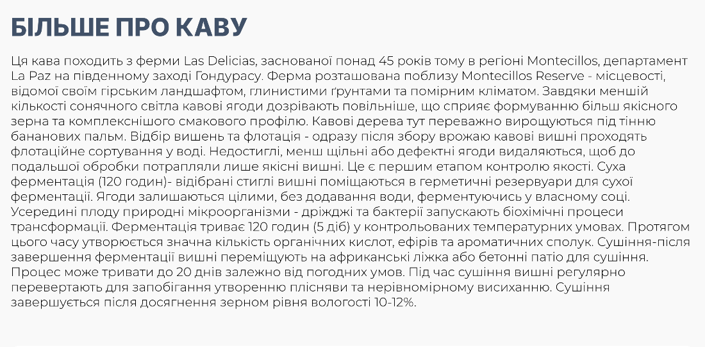
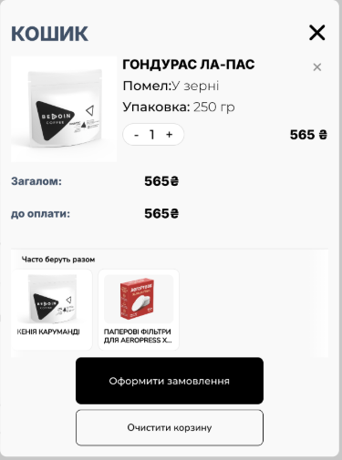
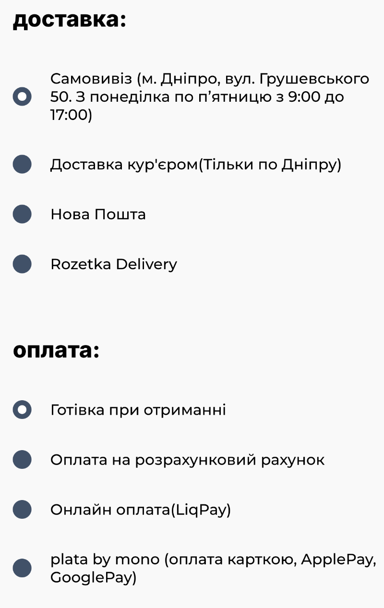
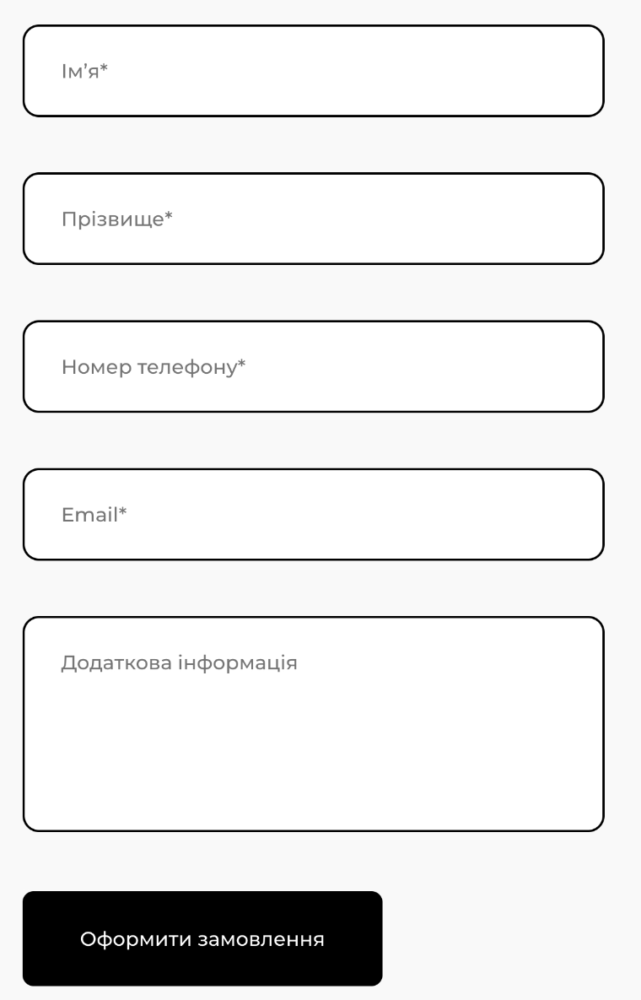
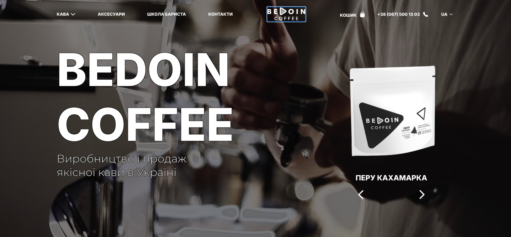
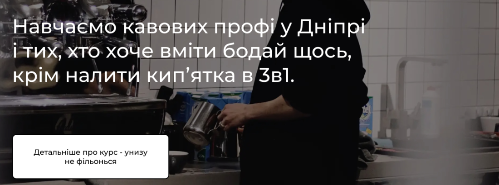

One of Ukraine’s leading specialty roasters — roastery, café and barista school in Dnipro, a business that has kept roasting and shipping through Russia’s full-scale war. The owner asked for an audit of the online shop: find what to improve, so that buying the coffee feels as good as the coffee itself.
One of Ukraine’s leading specialty roasters. A roastery, a café and a barista school in Dnipro whose graduates have opened cafés of their own; wholesale to coffee shops across the country; beans, drip bags and merch online. Through Russia’s full-scale war — in a city under regular missile attacks — the business has kept roasting, teaching and shipping. That resilience is the brand’s strongest story; the site is where it is least visible.
The owner came with one request: audit the site and find what to improve — where buyers get lost, what stops them from ordering — so that the quality of interaction with the product matches the quality of the coffee. Traffic comes from Instagram; the site is custom-built on React.
No analytics data and no tests with real buyers were available. Impact estimates are reasoned hypotheses — the report names no expected conversion figure. The first step of the engagement is to wire up measurement so changes can be measured, not felt.
The client is not named in the copy. Screenshots are from the site as it was during the audit (August 2025); every number is from the report.
The site is not template-built: strong identity, quality product photography, clean typography. It looks more expensive than most Ukrainian coffee shops.
The problem is that the site shows the product while barely helping to choose it. Tasting notes exist on the product page — but not in the catalogue, where the choice actually happens.
The second half of the path is weaker than the first: the order form has no address or parcel-branch field at all, and the delivery cost is shown nowhere before the end.
The stack itself is modern and fit to build on — but on mobile the product page’s main content appears after 22.9 seconds, losing buyers before they ever see the coffee.
So a full redesign isn’t needed. The choosing and buying scenarios need to be built onto an already strong foundation.
Not a benchmark — the report’s findings on one scale: 9–10 nothing to fix, 6–8 the buyer lacks what they need to decide, 4–5 loses some buyers, 3 and below breaks orders or data.
This is what holds the brand’s positioning — none of it should be touched during the changes.
The menu has Coffee, Accessories, Barista School and Contacts. Every second real scenario has no path of its own.
Under each coffee in the catalogue: only “100% arabica, Honduras”. Tasting notes exist — but only inside the product. Comparing six lots is impossible, so the choice goes by price.
A three-question picker: how you brew, what taste, whether you want acidity. Notes and acidity straight on the card.
No filters, no sorting, no search in the top bar. Process and roast level sit at the bottom of the product page — to compare, you open every coffee.
Filters: brew method, country, process, notes, acidity, roast, decaf. Search in the top bar. Roast date on the card.
The scenario doesn’t exist: no sets, no gift wrap, no voucher. “Mix your flavours” is the closest thing — but it’s framed as a bulk discount.
A set of three lots or drip bags, gift wrap as a cart option, a signed card, a voucher for an amount.
A wholesale price sits in every card, yet there is no business section: no terms, no samples, no request form, no café cases. Meanwhile the retail buyer keeps seeing “Wholesale: 308 ₴”.
A “For cafés” page: volume discounts, free samples, equipment and training support, a request form with a “monthly volume” field.
The page is strong: five courses with duration (8–30 h) and group size, a trainer, stats, a call to action and a labelled form. Missing the two things that decide: the price of any course and the dates of the next groups.
Price next to duration, a calendar of groups with seats left, what’s included, booking with a deposit.
No account, no order history, no subscription. The cheapest kind of sale walks the whole path again — including typing in all the details.
A “running low?” email on day 21, one-tap reorder, a subscription with a skip-a-month option.
Each has its own upside: wholesale grows the size of one order, gift sets lift the average basket, a repeat purchase needs no re-acquisition. Today the site serves only the buyer who already knows which coffee they want — and doesn’t let even them compare.
The retail buyer’s path from an Instagram post to payment. The curve is reconstructed from the report’s findings, not from interviews — every drop matches a concrete obstacle. Tap a stage.
Left: the card exactly as it was on the site (August 2025); the numbers point to the findings. “Should be” is a schematic of the proposed card.

Two Honduras lots in the “Mix your flavours” block are captioned “100% arabica, Colombia”. Same on the drip bags: a Kenyan and a Rwandan coffee — also “Colombia”.
For specialty coffee, origin is the main argument for the price. A buyer who knows coffee reads “Honduras — Colombia” as carelessness in everything else: roasting, freshness, logistics.
Home page: “free delivery from 6 kg”. Product page: “free from 2 kg for retail buyers, otherwise 100 ₴”. The buyer doesn’t know which to believe.
Three non-Ukrainian word forms in a single delivery note — on a brand built on Ukrainian craft. And the terms themselves are two list items instead of a block with icons.
On accessories: “400 ₴” and “Wholesale order: 400 ₴”. The line adds nothing, eats space in every card and undermines the very idea of a wholesale price.
Pour-overs, filters, jars and a T-shirt sit side by side without categories; the T-shirt is set in lowercase among uppercase names — with a typo in its own name.
The footer’s “Terms and condotions” link (sic) opens nothing. The copyright line reads “© 2022 – Form | All right”: an old year, the starter template’s name and an unfinished phrase.
“Clear basket” under the heading “Cart”; “roast type” next to “roasting”; a space before a colon; “E-MAIL” misspelt on the contacts page; an unexplained “UA|18+” element in the top bar.
Company details, footer and contacts page each show a different postal code. A small thing — but exactly the kind a buyer reads as “nobody checks details here” and carries over to roasting and freshness.

“Add to cart” is set small, with a lock icon, and visually merges with the quantity field. The page’s main action should be its most visible element — right now that’s the price.
“Regular price” and “Wholesale price (from 3 kg)” are set equally large. The retail buyer reads the smaller number first — then learns it isn’t for them.
The select shows “Whole bean” with no field name. Ten options — a newcomer can’t tell “Filter” from “V60”, and “Home coffee maker” is ambiguous. Needs a “Grind” label and one line: “Not sure? Pick the device you brew with.”
“250 g / 1 kg” works, but doesn’t answer “how much should I take”. Add: 250 g ≈ 14–16 cups, 1 kg ≈ 55–60 cups.
Roast level, process and variety sit under the description — where nobody gets to. These are the key facts for choosing; their place is next to price and grind.
Roast date, a brew recommendation, similar coffees, reviews, return terms. “For filter” needs one line: “espresso works too, but it opens up best in V60, Chemex, Aeropress”.
“More about the coffee”: one paragraph fifteen lines long — on a phone, the same paragraph has no end. The material is genuinely valuable — the farm, the region, 120 hours of dry fermentation, drying to 10–12% moisture. It’s what justifies a price above the supermarket. In this shape nobody reads it.

The same amount of text — but the person reads what they need and doesn’t have to fight through the rest.
One line: “sweet, with pear and jasmine — for those who don’t like acidity”.
Farm, altitude, soils — what justifies a price above the supermarket.
120 hours of dry fermentation, dried to 10–12% moisture.
Grind, temperature, ratio — and where this coffee opens up best.
Farm and region name, fermentation method and duration, moisture after drying, the history of the region’s cooperatives — it’s all already there. Ready material for four blocks; nothing to invent or negotiate.
The weakest part of the site — weaker than the catalogue. Numbers on the reconstruction point to the four critical findings.



The form has first name, last name, phone, email and “additional information”. Having chosen the parcel network, the buyer has nowhere to type the city and branch. Either a lost order or a manager’s call for every one.
“Total” and “To pay” are two identical lines without delivery, although the product page says it costs 100 ₴ under 2 kg. The cart total doesn’t match what the person will actually pay.
The first option is preselected. A buyer from Kyiv who doesn’t change it orders pickup from a street in another city. The default should be the parcel network — or nothing.
Unselected options are filled dark; the selected one has a white dot inside. The eye reads filled as active — the person isn’t sure what they chose. On the product page, by contrast, the selected weight is the filled one: two opposite logics in one purchase.
“Check promo” looks as important as “Place order” and sits above it. There should be one primary button; the rest in a secondary style. Cash on delivery is also listed first and preselected — so money arrives later, and some parcels are never collected.
Cards have only a name and a photo — no price, no button, the third one is cut by the screen edge. This is the simplest place to lift the basket: filters for the Aeropress, or a second coffee with a price and “+ add”. Field labels exist only as placeholders; no consent checkbox; no “we’ll call to confirm” promise.
A 250 g bag is roughly 14–16 cups — a natural repurchase cycle every 2–4 weeks. The site does nothing with it. And before the first purchase it offers no proof that an unfamiliar brand deserves 385 ₴ (≈ 8 €) for a bag.
No ratings, no reviews, no buyer mentions — at a price above the supermarket. Someone seeing the brand for the first time has no confirmation but your own words. 5–10 real quotes from Instagram messages would be enough.
No account, no order history, no subscription, no reminder email. Someone who has already paid walks the whole path again — including typing in all the details.
What happens if the coffee disappoints or arrives damaged is written nowhere. Clear terms for quality or damage problems lower the risk of a first purchase.
Whoever didn’t buy disappears for good. Instagram brings traffic but gives no list you can return to without an advertising budget.
Roasting in-house is the main edge over the supermarket. But there is no roast date, no dispatch time, no “roasted to order”.
The cheapest sale: one decision by the buyer instead of twelve. The minimum: one-tap reorder, an email on day 21, a subscription with a skip-a-month option.
The same buyer returning four times a year instead of once brings €32 instead of €8 (1 540 ₴ vs 385 ₴) — with no repeat acquisition cost. I count with the cheapest bag so the numbers don’t look inflated.
That’s why “repeat purchases — 2/10” in the scorecard is the most expensive line of the whole report, if not the most visible.

The photo is strong, but the brand name and “Roasting and selling quality coffee in Ukraine” don’t say what to do next. The carousel is the only element that resembles an action, and it doesn’t read as a button.
Needs a “Choose coffee” button and a concrete value: “Freshly roasted specialty coffee, delivered across Ukraine”.
Everything sits on the home page at once: catalogue, drip bags, bulk discount, B2B text, merch, subscription, map, contacts. While the catalogue is part of the home page it can’t grow into a real choosing tool — with filters, sorting, search and its own URL to run ads to, share on Instagram and rank in Google.
Leave the home page a short road to purchase: hero with a button → 6 popular lots → coffee picker → drip → “For cafés” → about roasting → contacts.
Where the eye looks for search and account sits “UA|18+”. If there is no second language, the “UA” switch is dead — the space should go to search.
No search in the top bar; drip bags and wholesale have no pages of their own although they sell on the home page. Lift the “Coffee” submenu categories to the first level, together with “For cafés” and “Pick a coffee”.

A switch in the top bar turns the tone of the whole site direct and conversational. Very untypical for Ukrainian roasters’ sites.
A blunt tone across a whole site is always a risk: a café owner looking for a supplier, or someone choosing a gift, walk away from it. The switch removes that risk — everyone sees the calm version by default, and the sharp one is turned on by those who like it.
And the copy itself is good — it sounds like a person, not a shop. The one problem: the idea wasn’t pushed through. Nobody can discover it, and the tone crept into places where it does harm.
“UA|18+” reads as a language plus an age mark. Nothing says it switches the site’s style, and “18+” hints at adult content that isn’t there. Call it what it is — “Tone: calm / unfiltered” — plus a one-time hint on the first visit.
In 18+ mode the course button carries two things at once: a promise to show details and a joke. A button names one action — “Open courses”; the joke moves to a line beneath it.
The 18+ course descriptions carry the whole character of the brand, yet they’re set small and grey under the key facts. These are the lines people remember — they need body-text size.
Half the lines arrive as bracketed asides — the rhythm breaks. And a joke in a heading removes the search query from it. Give the lines their own row; keep keyword headings calm and put the character into subheadings.
“10+ cafés opened” is ambiguous — whose? The 18+ copy is precise: “cafés opened by our graduates”. Pull the calm version up to the same precision.
A second attempt at what the tone switch does — conveying the brand’s atmosphere. Right for a roaster with its own café, but the two tools live apart and neither is framed as part of the experience.
Sound is manual only — the right call. Autoplay on a commercial site means an instantly closed tab, especially on a phone.
An icon without a label or a promise. People don’t press an unknown sound on a work laptop. Give it a reason — “Our café’s playlist” — and it becomes brand, not a surprise.
Playback survives page changes and tracks can be skipped — the mechanics are good. Missing: a volume control and the name of what’s playing. The playlist keeps one mood — that’s worth a caption.
Make sure the music is licensed for a commercial site. Rarely checked — and the reason music sometimes has to be removed after launch.
What I propose: merge music and tone into one labelled “atmosphere” block instead of two nameless icons in a corner. One gesture — and the site sounds and speaks like your café.
Music must never be on in the cart or at checkout — there people count money and type details. And the player weighs 1.25 MB, loading for every visitor even if nobody presses play (more in the technical section).
Coffee is bought from a phone: someone sees an Instagram post and opens the site right there. I walked the whole path — from the home page to the “Place order” button. Below are the actual screenshots from that walkthrough. Switch to the schematic view to see each issue marked in red — and to “Should be” for the minimal fix of every screen.
A round vinyl icon hangs in the bottom-left corner and overlaps text on every screen: it eats the start of the coffee name on the home page, the delivery terms on the product page — and in the order form it sits right on top of the required “Phone” field. The person can’t tap the field they must fill in. Fixed with a single offset.
The “Call me after ordering / You don’t have to call me” switch is placed below the main button. People press the button before they see the options — the choice exists, but nobody uses it. The form itself ends without an address: name, surname, phone, email — and the button.
The black button and “— 1 +” sit in one white capsule, flush, with no gap — so they read as one control, not an action and a field. “Add to cart” is smaller than “250 g” and wraps under the icon: the page’s main action looks like a caption inside the quantity field.
About half a screen of emptiness between the header and the coffee name. Plus breadcrumbs “HOME ‹ COFFEE ‹” with arrows pointing backwards and a stray separator at the end. On the screen that decides whether the person stays, nothing is shown.
“First name*”, “Last name*”, “Phone*” are written inside the fields and vanish on input. On a phone, with the keyboard covering the screen, the person forgets what they’re filling in. A bank-transfer option is also offered to retail buyers — it lengthens the list and raises questions; explain it or move it to B2B.
Almost nobody offers this option, and it says more about respect for the buyer than any service copy. The only problem is that it sits under the button. Move it up — and it becomes an advantage people notice.
Not “responsive at the end” but the order of work: first the screen people buy from, then the desktop derived from it. Every finding above hits harder on a phone — less space, more scrolling, no way to “look side by side”. Mobile is part of every iteration’s scope and is never priced separately.
Lighthouse in mobile mode. A person from Instagram opens the link on a phone and looks at an empty screen longer than they’re willing to wait — worst of all on the very page where the purchase decision is made.
I write the technical requirements and check the result. These look like local changes that don’t need a rebuild; the exact scope is set after a technical estimate.
A custom build, not a site builder: a React front end, Node.js and Express on the server, MongoDB judging by the shape of the requests, Nginx in front. Good news for the first iteration — no platform change is needed to integrate parcel-branch selection.
Light-grey service text on white fails minimum contrast — some people simply don’t read it. Field labels exist only as placeholders. Selection markers are inverted. Not a full accessibility audit, but these three are cheap — fix them first.
The only green Lighthouse score — but it checks basic hygiene only: a meta description, crawlable links, readable type. It doesn’t check what sells: no Product structured data (price and stock right in search results), and the catalogue lives on the home page with no URLs to rank.
Google Tag Manager and Analytics are on the site. Whether “added to cart”, “began checkout” and “paid” are sent is visible only from the owner’s account. Without them no change can be verified — there will only be a feeling of “seems better”.
Visitors come from Instagram, yet I saw no Meta pixel on the site — to be confirmed on the live site together with the events. Without it there is no retargeting: showing the very coffee a person looked at.
“Terms” in the footer leads nowhere; I found no privacy policy. For a shop taking card payments both need to be in order, with the exact list of documents checked against the payment provider’s requirements. Company details in the footer are present — good, and rare. Moving the catalogue to its own page also needs redirects and an updated sitemap prepared in advance.
What gets done first. Analytics events — I set them up myself, because without data no change can be verified; if products, sums or the completed order aren’t passed from the site, individual events will need a developer. Then contrast, field labels and the player’s weight — local changes, no rebuild.
Structured data for products, catalogue redirects and the legal pages go on a separate list for the second iteration — so that restructuring doesn’t cost positions in Google.
Solutions that have become so common in coffee retail that the buyer takes them for granted.
The brand and the product are already strong. The next step is helping to choose the coffee, letting people order without a phone call, and giving them a reason to return. The most expensive things right now are the simple ones: a missing address field, an unknown delivery cost, a wrong country in captions. Days to fix, not months.
If the address-less form, the unknown delivery cost and the 22.9-second wait cost one order a day — €8 × 30, counted at the cheapest bag (385 ₴). The sum repeats every month while the path stays as it is; the fix is made once.
What the same hundred buyers add if they return four times a year instead of once. Not a sales forecast — an illustration of repeat-purchase economics at the current bag price. How many orders it really is, the analytics funnel will show; that’s why it is the first work item, not the last.
I don’t forecast conversion — there is no data, and any figure would be invented. But multiplication on the client’s own prices shows the scale. Euro figures at ≈ 48 ₴ / €, the rate at the time of the audit.
Three iterations were proposed — each a complete stage with a result ready for implementation, so the owner can start with any one and stop after any one. The order is a recommendation: if wholesale for cafés matters more than the catalogue right now, that goes first.
Remove the barriers where the buyer has already decided to buy.
Help the buyer pick their lot with confidence — in ten seconds.
Turn the site into a system that brings the customer back.
By the site’s current state I don’t recommend it. It makes sense only if the brand separately decides to change its positioning, packaging or the whole visual system — then one coherent project beats redoing the same thing three times. The iterations aren’t lost in that case: the work carries over into the new project.
An audit that gets acted on is an audit that prioritises. The critical / important / minor tag turned out to be the most useful thing on every page — the owner reads the red first and knows where the money leaks.
Cheap fixes first. A wrong country in a caption and a missing address field cost more than any redesign — and are fixed in days. Leading with them made the plan credible.
Measure before promising. I named no conversion figure anywhere and made analytics the first work item — the only honest way to show the effect of a change to a small business.